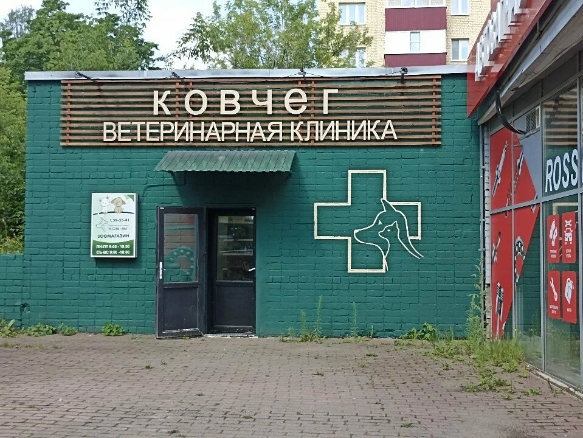
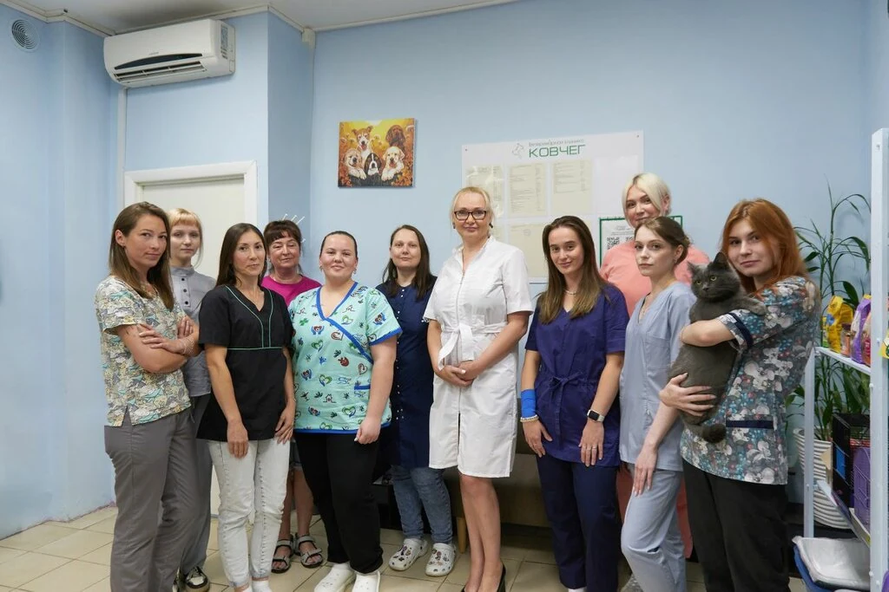
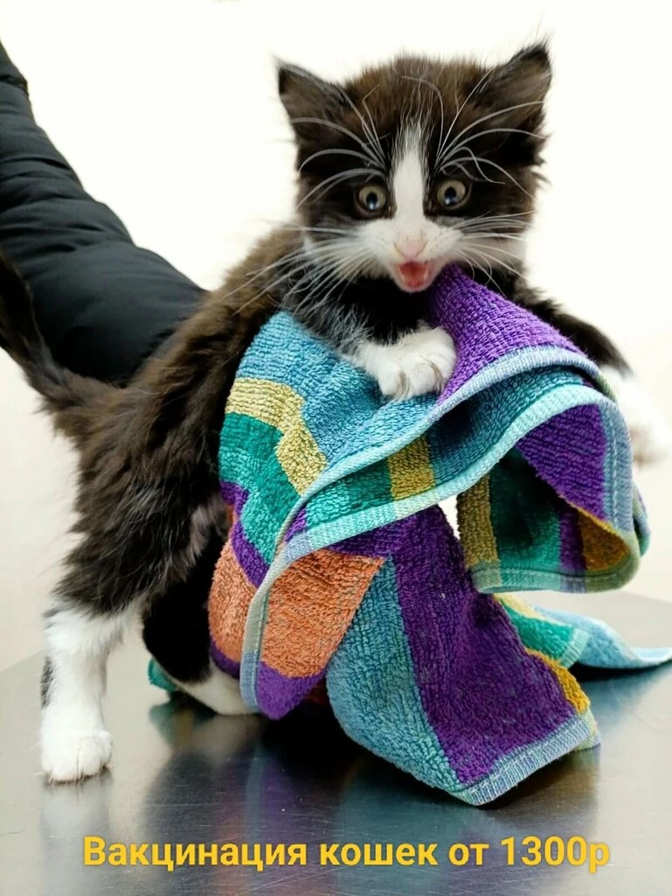
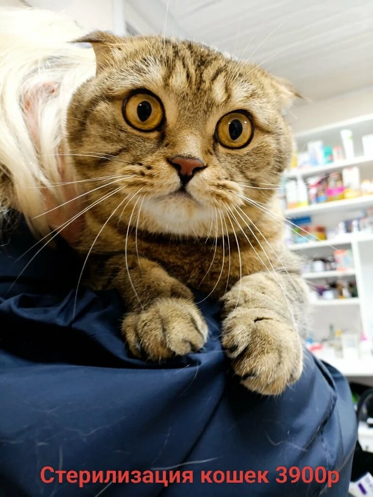
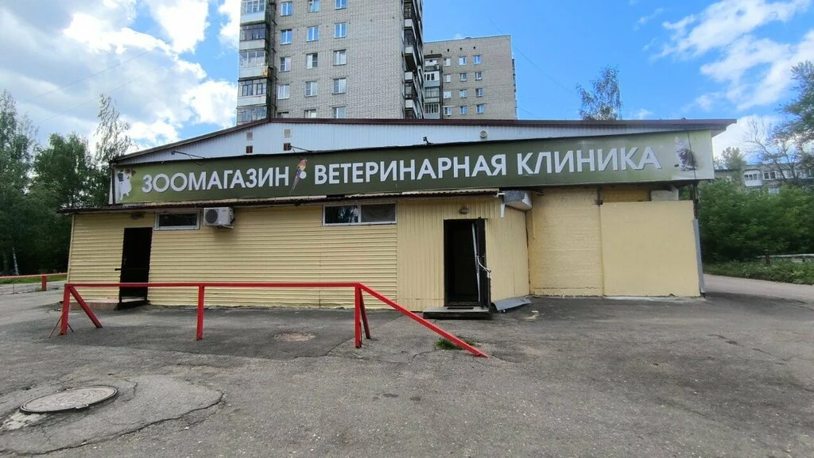
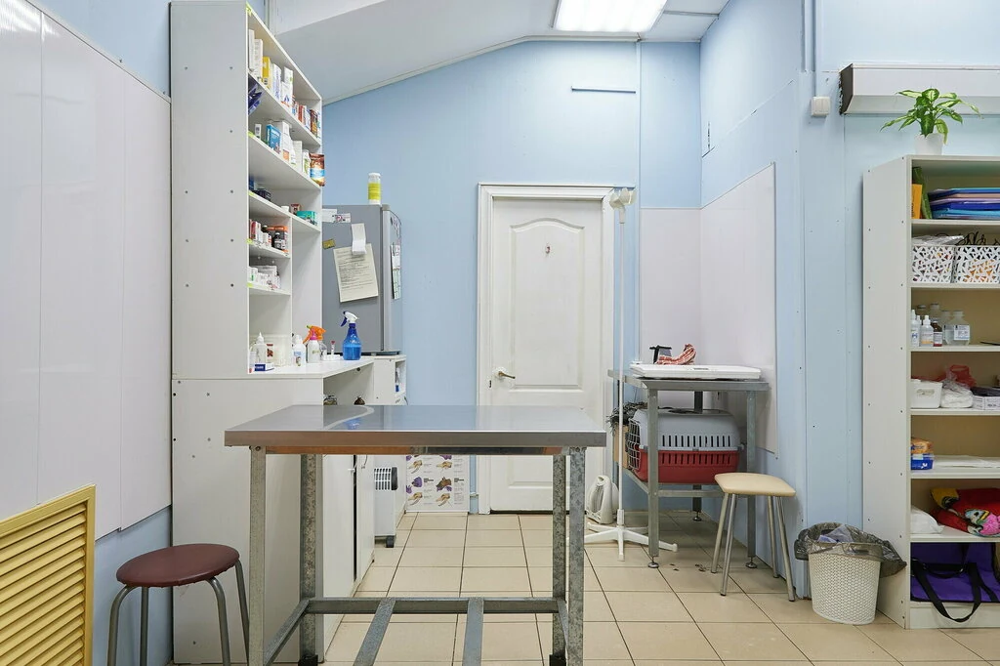
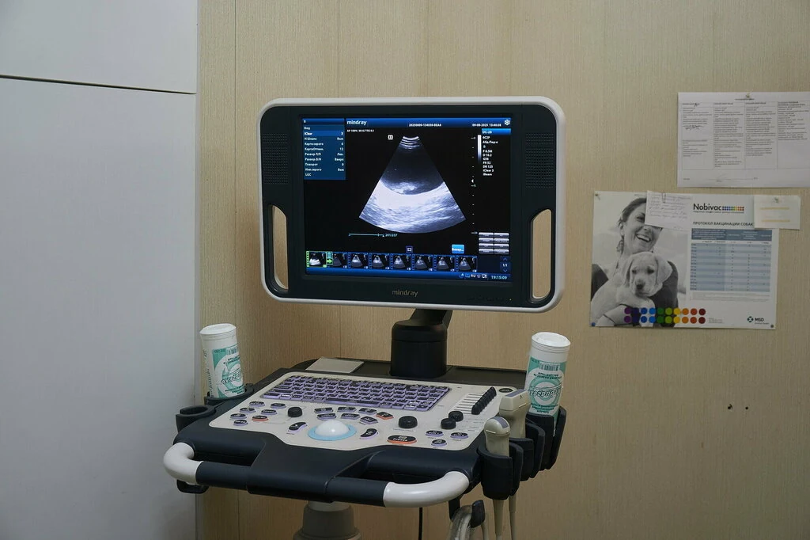
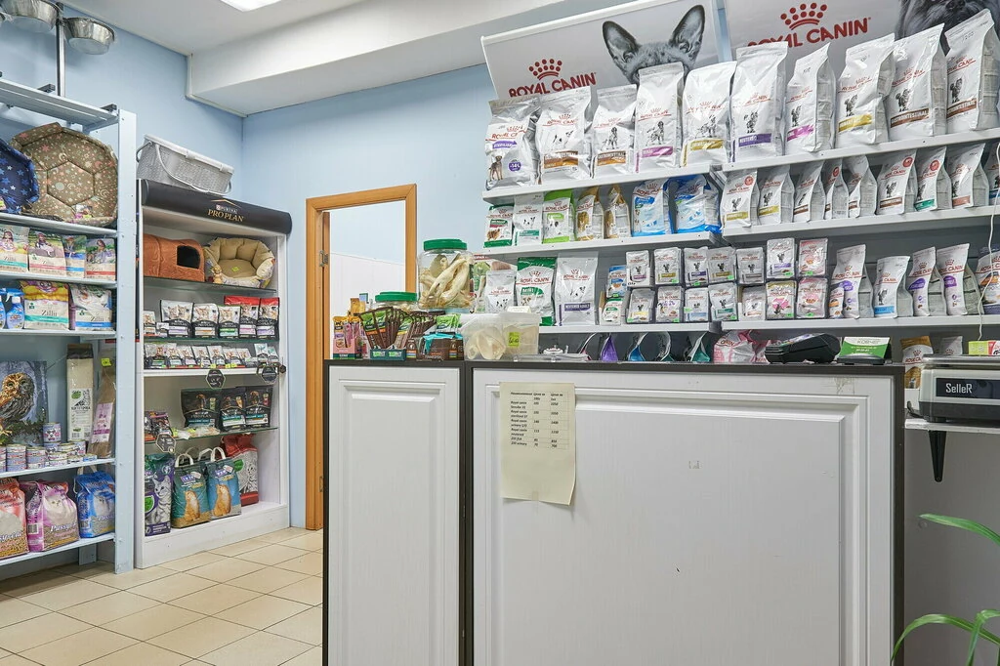
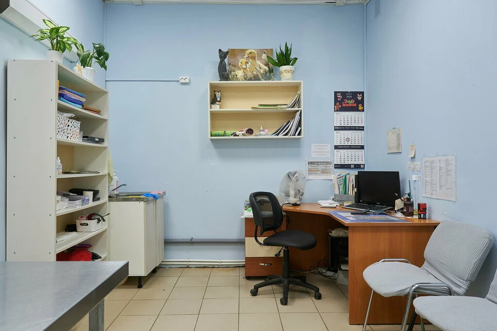
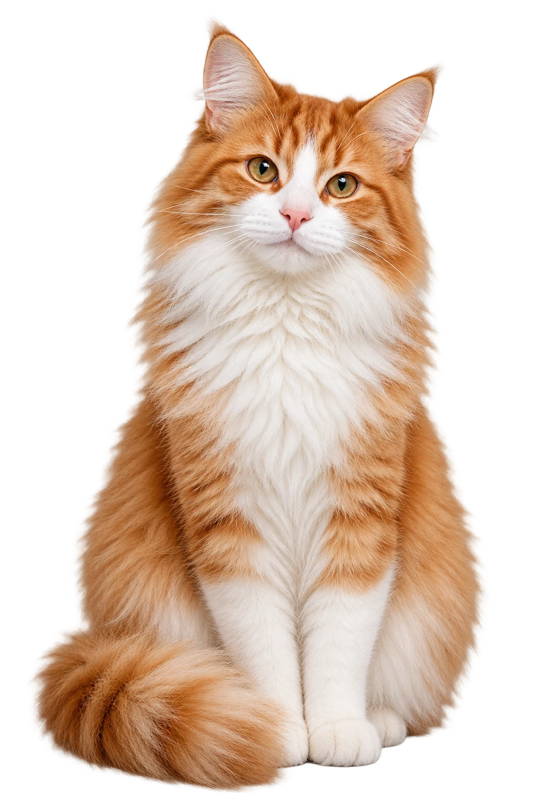

Ветеринарная клиника
Приём, диагностика и лечение питомцев. Также доступны вакцинация, стерилизация и кастрация.
Ветеринарные клиники «Ковчег» в Ярославле. Выберите удобный адрес — на Московском проспекте или улице Калинина.
Услуги
В «Ковчеге» доступны ветеринарные услуги, аптека и зоосалон. Наличие конкретной услуги уточняйте в выбранном филиале.
Выбрать филиалПриём, диагностика и лечение питомцев. Также доступны вакцинация, стерилизация и кастрация.
Ветеринарные препараты и товары для животных. Наличие уточняйте по телефону.
Уход за питомцами.
Наши клиники










Отзывы
Фрагменты отзывов о двух филиалах. Звёзды показывают рейтинг филиала на Яндекс Картах; ссылки ведут к источникам.

Филиалы
Два адреса в Ярославле. Свяжитесь с нужным филиалом напрямую и уточните время приёма.
Ветеринарная клиника «Ковчег»
Ветеринарная клиника «КовчегВет»